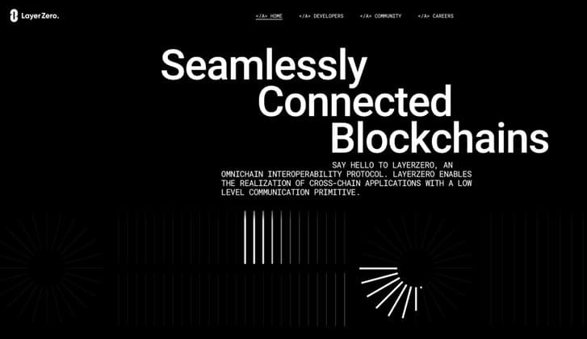

Is LayerZero’s Stargate a Portal to the Next Big Thing?
The Future of Cryptocurrency: LayerZero and Stargate Finance Explained 🔮 Have you heard of Stargate Finance? It's the first DApp built on LayerZero, a new blockchain that is being developed. It's also the first DApp built on this new blockchain. Stargate Finance has stirred up the crypto world with its impressive total value locked of almost $400 million. We will explore why this platform could be crypto's next big breakthrough. The surging popularity of cryptocurrency and decentralized finan
The Future of Cryptocurrency: LayerZero and Stargate Finance Explained 🔮
$400 MStargate Finance has stirred up the crypto world with its impressive total value locked of almost $400 millionHave you heard of Stargate Finance? It's the first DApp built on LayerZero, a new blockchain that is being developed. It's also the first DApp built on this new blockchain. Stargate Finance has stirred up the crypto world with its impressive total value locked of almost $400 million. We will explore why this platform could be crypto's next big breakthrough.
CryptocurrencyDigital or virtual currency that uses cryptography for security.In the Lexicon →The surging popularity of cryptocurrency and decentralized finance has generated immense challenges in the growing market. In a world where there are multiple chains with fragmented liquidity, seamless transfer of assets between different chains is the need of the hour.
Interoperability is crucial to the cryptocurrency space and this project could revolutionize it. Here, we explore what interoperability means, how it operates, and the bright possibilities ahead. This is where LayerZero and Stargate come in. But what exactly are they, and why are they so important?
What Is LayerZero?

TechnologyThe applied tools, systems, and infrastructure through which scientific knowledge is put to practical use.In the Lexicon →LayerZero is a protocol that enables developers to create cross-chain applications, allowing users to seamlessly swap coins between different blockchains for decentralized finance. This provides users with greater flexibility by enabling them to easily transfer assets and locate liquidity across chains.
LayerZero is working to overcome the issue of inadequate liquidity in the crypto world. As the number of blockchain networks increases, liquidity is fragmented and users are struggling to find the coins they need. With LayerZero, users can move assets between chains with ease, bringing liquidity together and making it more accessible for everyone.
What Is Stargate?

ETHEidgenössische Technische HochschuleIn the Lexicon →That’s from the horse’s mouth. My understanding when I first stumbled upon Stargate is that it’s the first application built by the LayerZero team, and it allows for the seamless transfer of native stablecoins between different chains. This means that users can move their stablecoins between different chains without having to go through the hassle of withdrawing, sending to a bridge, and re-depositing. Stargate simplifies the process and makes it easier for users to access liquidity across multiple chains. No more Uniswap to switch your USDC to ETH, only to swap it for some FWB and get hammered with fees on every step of the journey.
Stargate Finance is a fully composable liquidity transport protocol that sits at the heart of the OmniChain D5. The Interchain protocol allows for the transfer of assets from one blockchain to another. In plain English, that means that you can: use Stargate Finance to transfer USDC on Phantom to AVAX. Stargate Finance supports a wide range of chains, including Ethereum, BNB, Arbitrum, Polygon, and many others.
Stargate is a groundbreaking application that opens up a whole new world of possibilities for decentralized finance. By allowing for seamless transfer of stablecoins between chains, it brings liquidity together and makes it more accessible for users. This is a major step forward for the world of cryptocurrency, and it’s just the beginning. Makes for the case of one DEX to rule them all; the one with the greatest reach, an omnipotent grasp.
Why Is Interoperability Important?

Interoperability is essential to the development of cryptocurrency. LayerZero and Stargate are providing users and developers with enhanced accessibility to liquidity and assets by connecting them. This creates a more efficient and effective system.
The proliferation of cryptocurrencies has highlighted the necessity for interoperability. Difficulties in asset transfers between different chains and exchanges adversely affect efficiency. The security of cryptocurrency bridges is a pressing issue, as many current bridges have been compromised and resulted in significant financial losses. By providing a more secure and streamlined system for transferring assets between chains, LayerZero and Stargate can help mitigate these risks and make the world of cryptocurrency a safer place for everyone.
The LayerZero Approach
LayerZero employs on-chain light nodes, relying on decentralized oracles to provide block headers upon request. This method enables a message exchange between on-chain endpoints via two entities - an Oracle and a Relayer.
An Oracle and Relayer are notified when the origin chain sends a message to another chain. The Oracle sends the relevant block header to the target chain’s endpoint. The Relayer submits a transaction proof which, if validated on the target chain, results in the message being sent to its designated address.
This approach offers improved security by using an Oracle-Relayer pairing. The Oracle infrastructure is well-established, while the Relayer adds an extra layer of protection. This makes it so that both the Oracle and Relayer must be compromised for a problem to arise.

LayerZero is joining the blockchain ecosystem as a provider of an omnichannel solution, designed to operate as an interoperability layer. This is a practical, field-tested technology, that is already being used daily by well over 5,000 Web3 dApp builders and projects.
The Metrics and Growth of Stargate Finance
Stargate Finance has gained prominence in the crypto world, evidenced by its total value locked nearing $400 million. This strong performance validates its potential and reveals its popularity. Stargate Finance offers a range of features, including transfer, pools, and farming. Currently, on MATIC, you can receive 13.58 USDT through farming, which is impressive even in a bear market. The stablecoin, Frax, offers 9.26 on AVAX and 9.11 on Optimism. Stargate Finance’s ability to offer competitive APYs makes it an attractive option for investors.
Insights and Opinion on Stargate Finance
I’m of strong belief that Stargate Finance has a lot of potential to be the next big thing in crypto, and even bigger, payments. Its ability to support a wide range of chains and offer competitive APYs makes it an attractive option for investors. Additionally, its fully composable liquidity transport protocol is unique and has the potential to revolutionize the way we transfer assets between chains. Pretty sure this will be the largest and most densely populated and traded DEX around. Make no small plans, some say. Well, LayerZero started from the bottom and they’ll be singin’ on top soon enough.
Stargate Finance has a lot of potential to be a game-changer in the crypto world and LayerZero paving the way for its ability to do so. Its fully composable liquidity transport protocol and ability to support a wide range of chains make it an attractive option for investors. Stargate Finance holds potential for growth, however, we caution that this is not a recommendation for investing; always research any project before investing. Definitely NFA, but I gotta say.
There is absolutely a reason why PayPal made its first crypto investment into LayerZero. There is also a reason why Christie’s first investment from their newly minted fund was LayerZero. It all starts with the infrastructure and how you can prevent collusion or crime when you make a transaction, any transaction, on Earth. That’s what I think. It’ll replace the entire SWIFT payment system and create a new way of payment that allows for a utopian society whose money is accepted everywhere the LayerZero symbol is located.
Token Wisdom

LayerZero and Stargate exemplify how the industry is adapting to fulfill user and developer demands. It is essential to contemplate how these advancements will shape decentralized finance and create fresh openings.
When I first started watching LayerZero on Twitter, I discovered over 400 projects utilizing the LayerZero dApp. This is well above 4,000 NFT projects and most likely another 1,000 utility projects that have all created dApps with LayerZero and Stargate Finance providing the seamlessness to pull this highly technical symphony of nodes.
LayerZero and Stargate represent an exciting shift towards a more interconnected and streamlined cryptocurrency ecosystem. Transferring assets across different chains will benefit users, developers, and promote the growth of decentralized finance. Challenges still exist, such as improving bridge security, but these developments are a positive step for the industry. As the cryptocurrency landscape evolves, stay informed of potential opportunities.
What's your opinion of Stargate Finance? Could it become the next major cryptocurrency success?